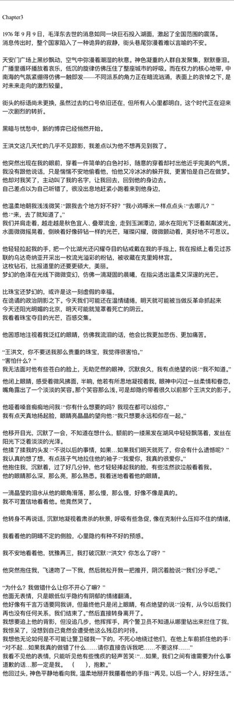
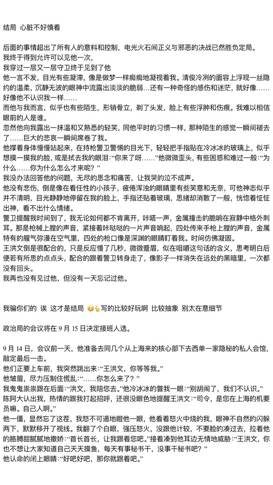
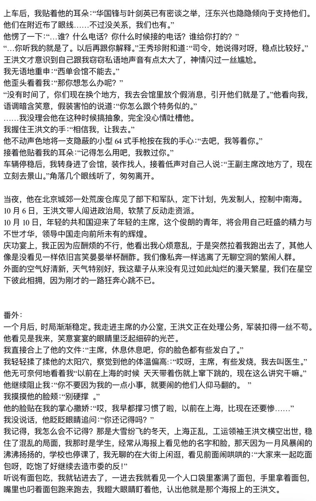
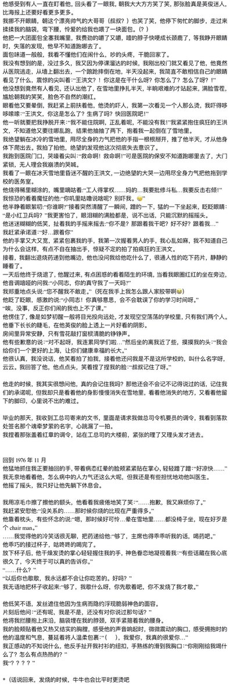

Дистанционизм
@432Ifantrygroup
@WHWWW126 老师，我错了...我竟然怀疑你是反串...就看这文，写的是真挺好的




126号线
@WHWWW126
我写完了 结局和番外没有黄色了
大家休息一下吧 注意身体
*梦女文啊 主角是王洪文 其他注意事项在第一章
随便梦梦 没有逻辑😑以后不写那么多了
以后只写少量剧情为搞黄色服务😋👍 https://t.co/BDJFz7Yi0d